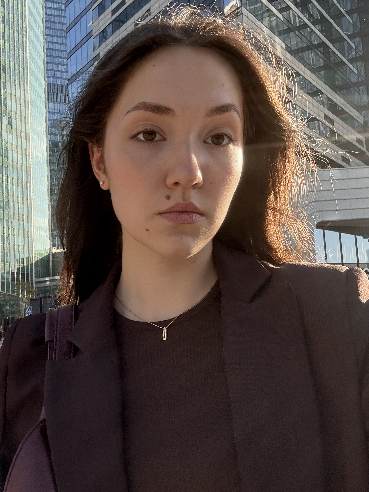

Виктория Балашова
или просто Вика
Немного обо мне
- очень люблю языки, хочу выучить все и сразу, какое-то время хотела стать переводчиком
- при этом всю жизнь училась в инженерном классе физмат лицея :)
- была на всеросе по английскому
- я наполовину марийка, все детство ездила в Йошкар-Олу и обожала слушать марийскую речь в деревнях; сама марийский, к сожалению, фактически не знаю(
- до сих пор регулярно грущу из-за того, что Плутон перестали считать планетой
Люблю:
- всех кошек: маленьких, больших, домашних, диких, очень пушистых и совсем лысых...
- щадящие физические активности: пилатес, йогу, долгую ходьбу
- весну
- нижегородские закаты и улицы
- батончики рот фронт
Не люблю:
- геометрию
- свой слабый иммунитет
- кабачки
- когда Нижний Новгород называют Новгородом
Родной город
Нижний Новгород
Место учебы
Лицей 82
⇒
Фундаментальная и компьютерная лингвистика, НИУ ВШЭ, Москва